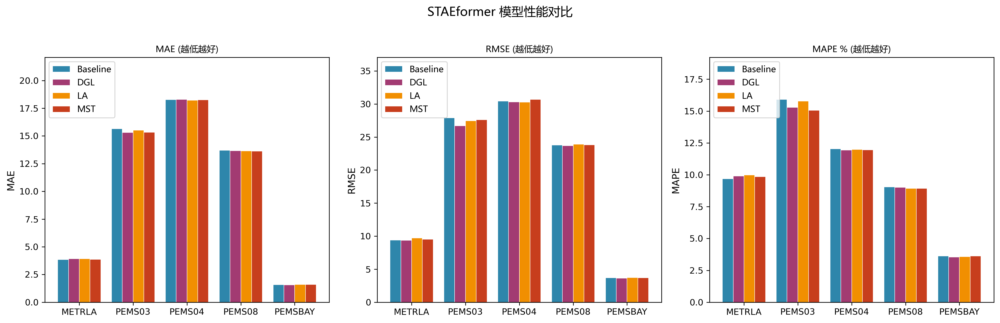
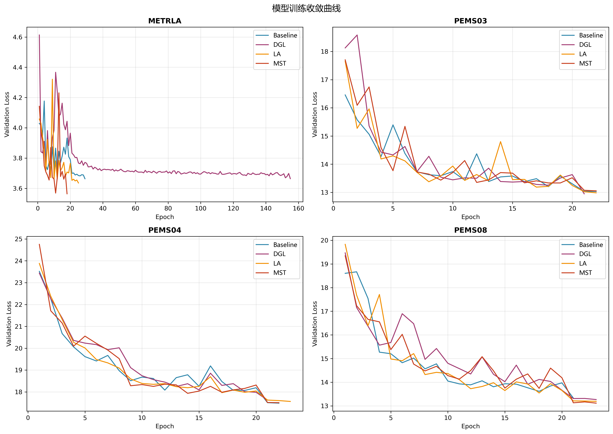
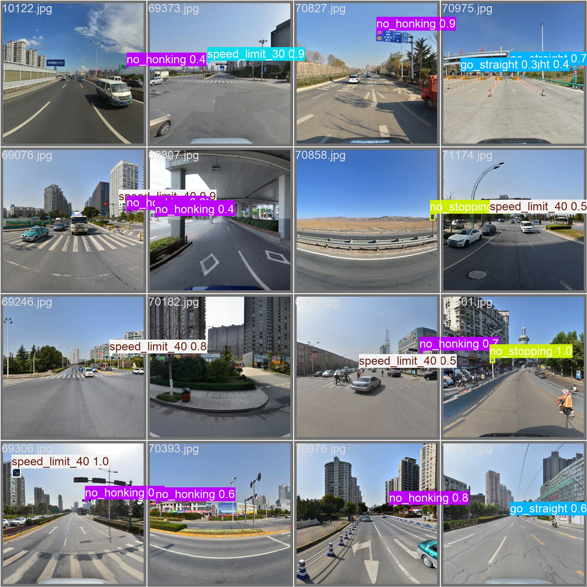
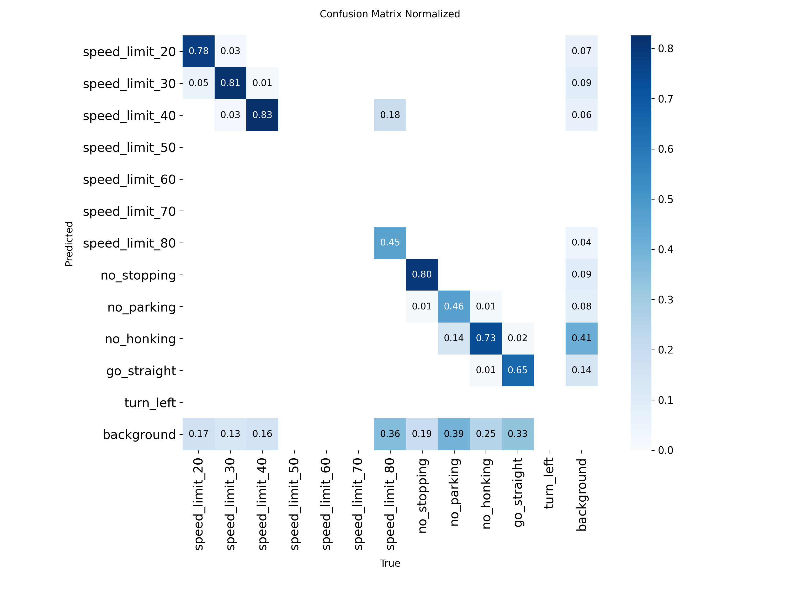

交通流预测、复杂场景识别
Intelligent Traffic Management / Demo Version
用小模型做感知与预测，用大模型做研判与决策，让交通管理从“看见”走向“会判断、会诱导”
本原型面向课程报告展示，统一承接大作业1与大作业2的成果，并为大作业3的具身执勤与 Isaac 仿真验证预留扩展入口。页面强调系统闭环表达，而不是单点算法堆叠。
感知、预测、研判、预警、诱导
训练曲线、对比图、检测样例、混淆矩阵
System Narrative
课程报告想讲清楚的，不只是模型准确率，而是完整的管理决策闭环
面向管理者的智能交通
从“算法结果展示”升级为“管理建议输出”，让预测和识别真正服务于分级预警、诱导发布与辅助管控。
大小模型分工协作
小模型负责高速、稳定、结构化输出，大模型负责跨模态理解、态势总结与策略生成，形成轻重结合的系统架构。
课程项目可演示、可扩展
当前先完成网页原型与成果嵌入，后续可继续接入图表、截图、仿真视频和更完整的规则推理链路。
Collaborative Architecture
从感知到决策的五段式协同架构
点击下方阶段卡片，可以查看该阶段由大模型还是小模型主导，以及它在交通管理中的作用。
小模型主导
场景感知：识别复杂交通参与者与关键异常目标
使用轻量视觉模型实时识别车辆、行人、非机动车和异常行为，为后续态势分析提供结构化输入。
Completed Work
把已完成的大作业，真正挂接到统一的课程系统里
下面不再只是“模块介绍”，而是直接嵌入你仓库里的训练曲线、模型对比图、检测样例和实验指标，作为课程报告的真实证据。
已完成 / 大作业1
多尺度交通流量精准预测与分级预警诱导
课程系统中的“预测层”。它提供路网负荷趋势、拥堵长度预估和预警提前量，为后续大模型研判与诱导发布提供时序依据。
- DGL 方案在 5 个数据集里拿下 4 个最佳 RMSE
- METRLA 基线 MAE 为 3.84，DGL RMSE 降至 9.37
- 训练曲线与模型对比图已直接接入本页
已完成 / 大作业2
复杂交通场景多目标精准识别与态势研判
课程系统中的“感知层”。它把复杂道路场景中的交通标志和关键目标识别结果，转成可用于态势判断的结构化事实输入。
- 当前数据集聚焦 12 类交通标志
- 有效样本 3863 张，已拆分为 train / val / test
- 704 输入实验已得到可视化预测图和混淆矩阵
规划中 / 大作业3
具身机器狗自主交通执勤与辅助管控
课程系统中的“执行层”。后续计划把这里接成策略落地端，让大模型给出的管控建议变成现场可执行动作，并由 Isaac 仿真验证。
- 承接诱导策略与执勤资源调度
- 补全从感知到执行的闭环
- 后续再单独扩成仿真页面
Assignment 1 Evidence
交通流预测：把论文复现、改进对比和训练稳定性放到同一个展示面板里
DGL 在 5 个数据集里拿下 4 个最佳 RMSE
Baseline RMSE 9.39，适合作为原始参考
DGL 版本在同数据集上取得更优 RMSE
DGL 版本在湾区数据集上表现最好


Assignment 2 Evidence
目标识别：把 12 类 TT100K 交通标志检测结果直接变成网页中的态势感知证据
限速、禁停、禁鸣、直行、左转等课程子集类别
train 2705 / val 772 / test 386
50 轮训练后的 704 输入实验显著提升了检测精度
同实验 precision 0.796 / recall 0.673


Demo Flow
课堂演示时，可以按这条线快速讲完整个系统
Step 1
观测输入：汇聚视频流、流量序列与事件线索
以路口视频、历史流量、突发事件信息为输入，让小模型先产出结构化观察结果，作为大模型推理的事实基础。
Roadmap
网站原型先搭骨架，后续再把课程报告的执行层和仿真层补齐
完成单页课程报告原型并嵌入现有成果
统一主题表达、视觉风格、实证图展示和 demo 讲述路径。
补充更多截图、结果表和阶段性结论
把大作业1/2里更细的图表、论文复现摘要和实验对比补到对应模块中。
扩展机器狗执勤与 Isaac 仿真页
补充具身执行端的仿真验证流程，形成从决策到执行的完整闭环。